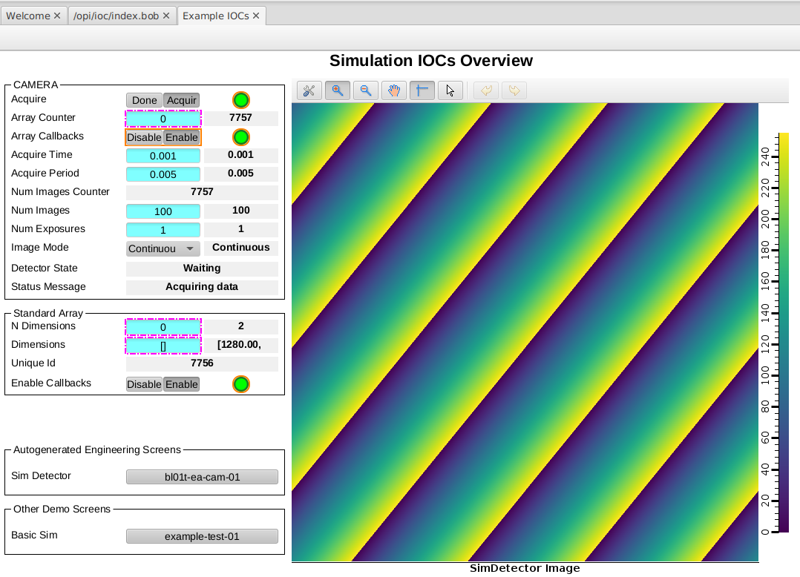

Changing a Generic IOC#
This is a type 2 change from Types of change: you change the Generic IOC itself, not just an instance’s config. You need this when the behaviour you want is not exposed as an instance parameter — for example to:
bump a support module to a new version,
add support such as autosave or iocStats,
adjust the support YAML so instances can use new entities.
Note
Avoid creating a single Generic IOC for many classes of device.
Prefer a separate Generic IOC per device class and a single physical device per IOC instance. This makes for smaller images, fewer rebuilds, and records still can link across IOCs via Channel Access. Kubernetes makes running many small services cleaner than a few monolithic ones.
The exception is a set of devices always deployed and restarted together — at DLS, for instance, one Generic IOC covers a beamline’s vacuum equipment.
The most important reason for this is to allow you to restart or turn off a device and at the same time restart/turn off just the software that talks to it, without affecting any other devices/IOCs.
You test type 2 changes inside the Generic IOC’s own devcontainer, against an
IOC instance from a services repository selected with ibek dev instance.
Preparation#
This continues in the ioc-adsimdetector devcontainer, testing against the
bl01t-ea-cam-01 instance in your t01-services repo from the earlier
tutorials. If you closed the devcontainer, reopen the ioc-adsimdetector folder
in VSCode, press Ctrl-Shift-P and choose “Reopen in Container” — clone it next
to t01-services first if you no longer have it:
git clone --recursive https://github.com/epics-containers/ioc-adsimdetector.git
cd ioc-adsimdetector
code .
# Ctrl-Shift-P -> "Reopen in Container"
A fresh devcontainer needs two things before an IOC will run: a built binary and
a selected instance. The IOC source is symlinked to /epics/ioc, so build there
and select your bl01t-ea-cam-01 instance:
cd /epics/ioc
make
ibek dev instance /workspaces/t01-services/services/bl01t-ea-cam-01
./start.sh
ibek dev instance symlinks the chosen instance’s config folder to
/epics/ioc/config. You should see an iocShell prompt with no errors above it.
Make a change to the Generic IOC#
The bl01t-ea-cam-01 instance does not start acquiring on its own — in
Developer Containers Part 2 you had to set :DET:Acquire
by hand with caput each time the IOC started. Suppose you want every
simDetector built from this Generic IOC to acquire on startup. That is a change
to the Generic IOC itself, made in the support YAML rather than in any single
instance’s ioc.yaml.
The support YAML describes the entities an instance may use. Open
ibek-support/ADSimDetector/ADSimDetector.ibek.support.yaml, find the
simDetector entity, and add a post_init section after its pre_init:
post_init:
- type: text
value: |
dbpf {{P}}{{R}}Acquire 1
dbpf {{P}}:ARR:EnableCallbacks 1
{{P}} and {{R}} are the entity’s parameters, rendered with Jinja at runtime —
here BL01T-EA-CAM-01 and :DET:. Restart the IOC (Ctrl-D to exit the shell,
then ./start.sh). start.sh re-runs ibek runtime generate2, so your lines now
appear in the rendered startup script /epics/runtime/st.cmd:
dbpf BL01T-EA-CAM-01:DET:Acquire 1
dbpf BL01T-EA-CAM-01:ARR:EnableCallbacks 1
Every instance of this Generic IOC now acquires on startup without needing the command in its own config.
Note
This is deliberately artificial: a post_init here changes behaviour for all
simDetector instances. For per-instance behaviour, prefer the epics.dbpf or
epics.PostStartupCommand entity in ioc.yaml (both defined globally in
ibek-support/_global/epics.ibek.support.yaml) — the type 1 approach you used
in Changing the IOC Instance.
Support YAML — entities, pre_init/post_init, and parameters — is covered in
depth in Create a Generic IOC.
View the simulated image#
Launch Phoebus from outside the devcontainer to watch the detector, leaving the IOC running in its devcontainer terminal:
cd ioc-adsimdetector
./opi/phoebus-launch.sh -resource /workspaces/t01-services/opi/demo-simdet.bob
This opens demo-simdet.bob, the hand-coded overview screen you made in
Run It and View the Screens. Because the Generic IOC now starts acquisition
itself, the simulation image is already moving — no manual caput needed this
time.
Note
If you had Phoebus open while you restarted the IOC, it loses contact with the PVs and does not reconnect to the image on its own. Close Phoebus and relaunch it with the command above to pick the detector back up.
This is just an artifact of using vscode devcontainer port forwarding and would not happen in a real deployment.

The demo-simdet.bob screen showing the simulated image.#
Publishing and cleaning up#
We will not push these demo changes. To publish a real Generic IOC change you
would commit the ibek-support submodule first, then the parent
ioc-adsimdetector repo, because of the submodule dependency. Later tutorials
cover forks and pull requests for sharing changes back.
Undo the demo edit:
cd /workspaces/ioc-adsimdetector/ibek-support
git reset --hard